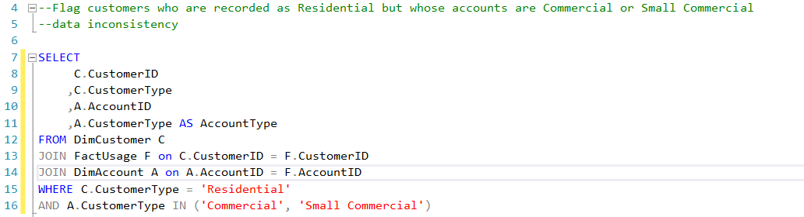
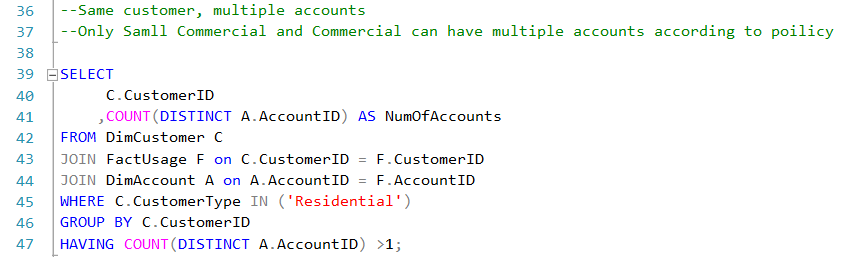
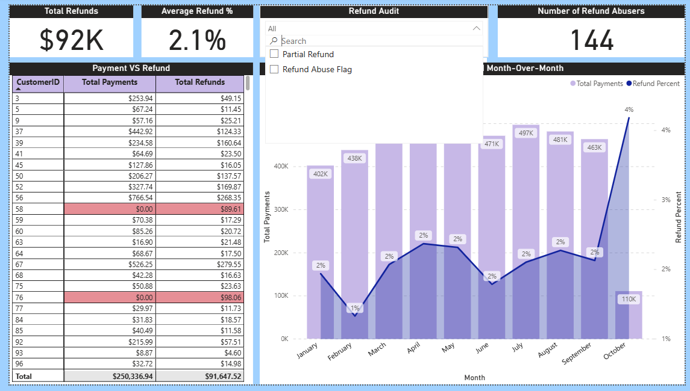
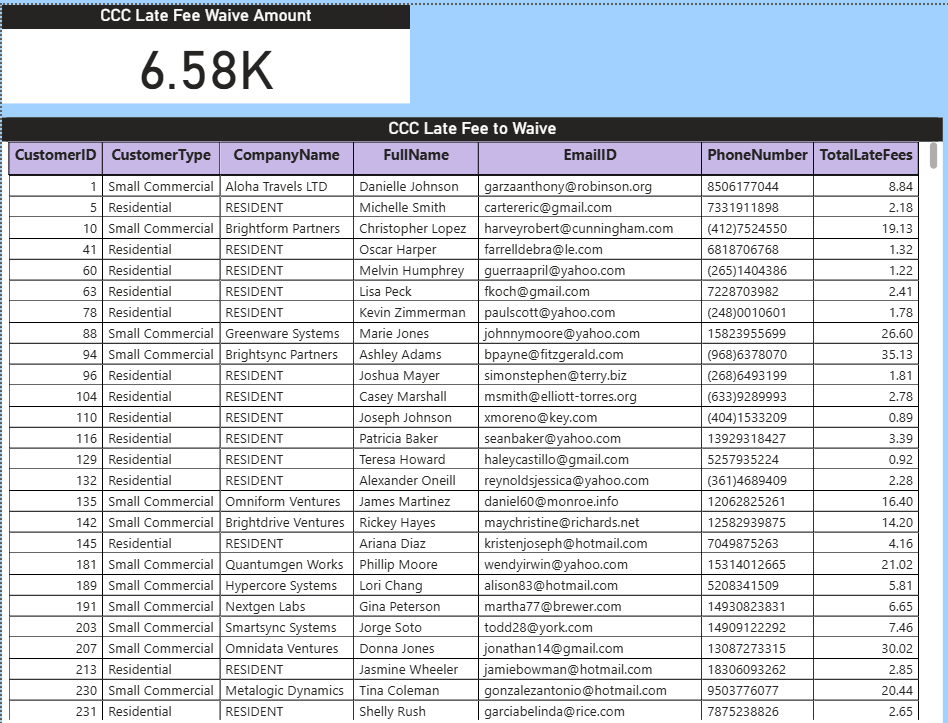
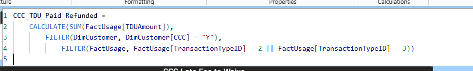
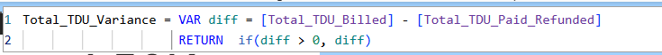

Utility Billing Data Quality & Revenue Risk Analysis
Project Overview
This project models a utility billing system in Microsoft SQL Server to analyze customer behavior, billing accuracy, revenue leakage, compliance risks and most importantly reimbursments owed from TDU (Transmission and Distirbution Utility) charged on specil care customers who do not pay their bills. In addition interactive Power BI dashboards have been built for analytics and operations teams.
Data Model
This project uses a star schema in Microsoft SQL Server to organize utility billing data.
- DimCustomers
- DimAccounts
- DimTransactionType
- DimDate
- FactUsage (Fact Table)

Key Business Questions & Analyses
1. Data Inconsistencies:
Flag customers marked as Residential in DimCustomer but whose accounts are Commercial or Small Commercial in DimAccount.

2. Inactive Accounts With Recent Activity:
Identify accounts marked as AccountStatus = 'Inactive' but still showing usage transactions.

3. Same Customer, Multiple Accounts:
Find Residential Customers who have multiple accounts under their CutomerID.

4. Refund Abuse:
Identify customers where total Refund amount exceeds total Payments, and vizualize Total Payments Vs Refund monthly.
Detect cases where a Refund was issued without any Payments, this is fraud.

5. Critical Care Compliance:
Identify Critical Care Residential customers who were ever charged a Late Fee (should ideally have no service interruptions).

DAX snippett 1, Late Fees :
First we calculate transactions (payments and refunds), variance = late fees

DAX snippett 2, TDU Varaiance = Late Fees :
Identify Critical Care Residential customers who were ever charged a Late Fee (should ideally have no service interruptions).

You can find the source code and all other answered business questions
in the repository **UtilityCompanyAnalysis